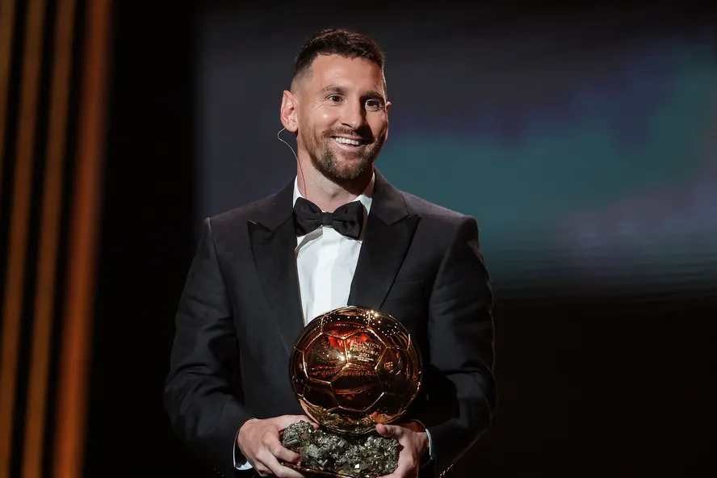

Lionel Messi (1987) é um jogador de futebol argentino e um dos melhores atacantes do mundo. Com habilidade técnica e uma velocidade excepcional foi eleito sete vezes o melhor jogador de futebol do mundo, conquistando o troféu Bola de Ouro em 2009, 2010, 2011, 2012, 2015, 2019 e 2021.
